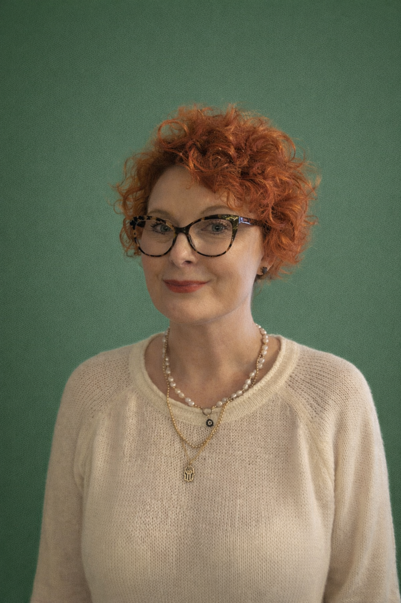

Zarząd fundacji
Zarząd Fundacji
Poniżej znajdują się informacje o osobach tworzących Fundację OnkoNova.
Joanna Skarbek — Prezes Fundacji
Jestem lekarzem dentystą, absolwentką kierunku lekarsko-dentystycznego, który ukończyłam w 2018 roku. Specjalizację z chirurgii stomatologicznej odbyłam w Uniwersyteckim Szpitalu Klinicznym im. Mikulicza-Radeckiego we Wrocławiu. Od początku swojej pracy zawodowej jestem związana z onkologią głowy i szyi — dziedziną, która stała się moją pasją i głównym obszarem działalności klinicznej.
Wieloletnia praca z pacjentami onkologicznnymi ukształtowała moje podejście do medycyny jako połączenia wiedzy, doświadczenia i empatii. Z potrzeby realnego wpływu na jakość diagnostyki, leczenia i wsparcia chorych, razem ze wspólniczką założyłam fundację OnkoNova.
Fundacja powstała z przekonania, że nowoczesna onkologia powinna być kompleksowa — łączyć innowacyjne podejście medyczne z edukacją, profilaktyką oraz realnym wsparciem pacjentów i ich bliskich. OnkoNova jest naturalnym przedłużeniem mojej pracy lekarskiej oraz wyrazem zaangażowania w rozwój onkologii głowy i szyi.

Anna Weliczko — Wiceprezes Fundacji
Jestem socjologiem z wykształcenia (Uniwersytet Wrocławski, 2003) i doświadczonym menedżerem, który przez ponad 15 lat kształtował swoją karierę w świecie korporacji. Moja droga zawodowa – od marketingu i zamówień publicznych, aż po stanowisko Kierownika Działu Logistyki w dużej firmie – wyposażyła mnie w unikatowe kompetencje w zakresie organizacji, strategii i efektywności działania.
Punktem zwrotnym było osobiste doświadczenie związane z chorobą onkologiczną bliskiej osoby. Trudności w poruszaniu się po systemie opieki zdrowotnej uświadomiły mi, jak bardzo brakuje pacjentom zorganizowanego i kompleksowego wsparcia.
Od czterech lat jestem pracownikiem Uniwersyteckiego Szpitala Klinicznego we Wrocławiu, gdzie na co dzień wspieram pacjentów onkologicznych – zarówno w poradni, jak i na oddziale chirurgii twarzowo-szczękowej. Ta praca dała mi wgląd z pierwszej linii frontu: dogłębne zrozumienie wyzwań klinicznych, logistycznych i emocjonalnych, z jakimi mierzą się chorzy.
Fundacja narodziła się z połączenia tych trzech filarów: empatii socjologa, precyzji logistyka i praktycznej wiedzy pracownika medycznego. Wykorzystujemy nasze kompetencje, aby sprawnie i skutecznie pomagać tym, którzy walczą o zdrowie. Wiemy, co jest potrzebne, bo jesteśmy blisko pacjenta — zarówno w szpitalnej poradni, jak i w Fundacji.